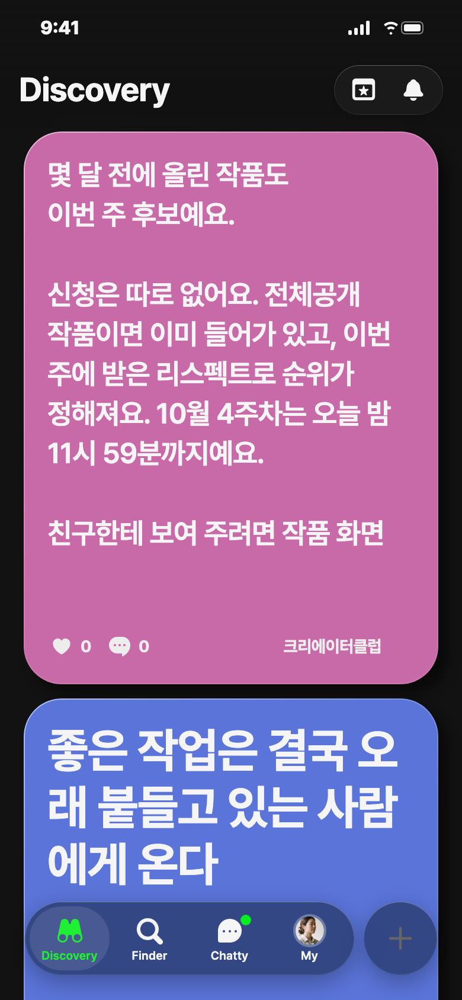
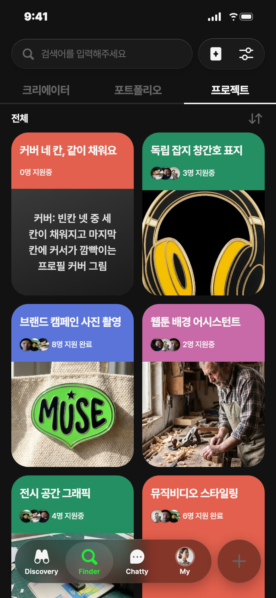
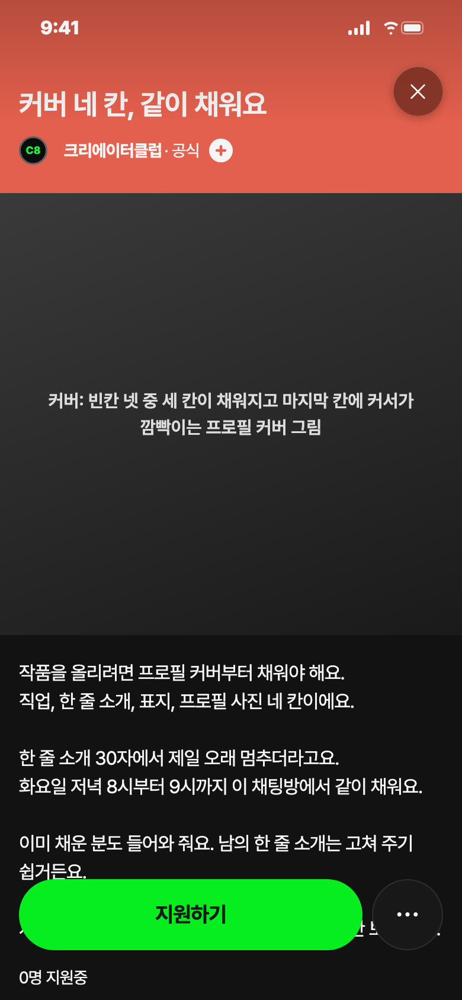
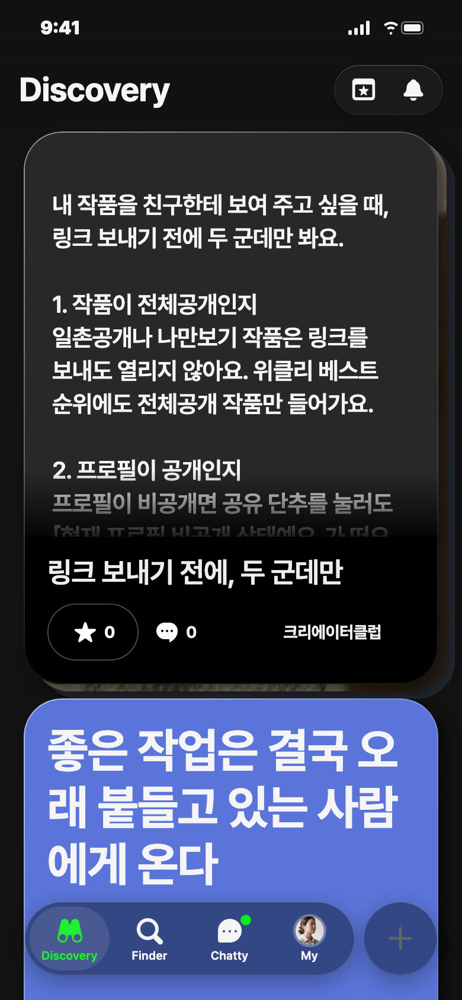
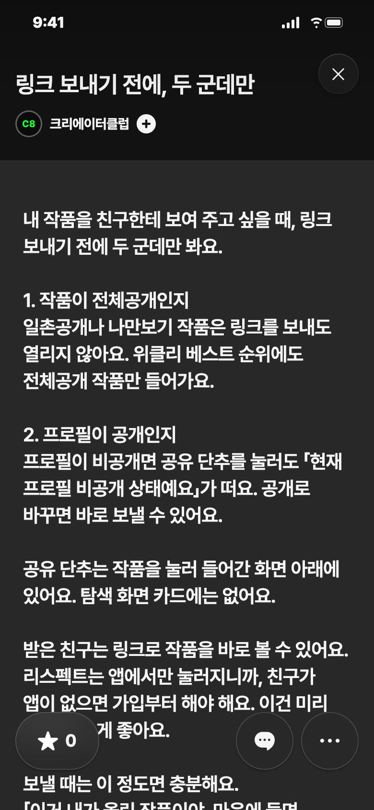

C8 앱 게시 시안 · 11/1(일) — 오늘 추천: 영감 · 오후 3시
오늘 추천 · 영감 · 오늘 오후 3시 · 분홍

왜 오늘: 일요일, 이번 주 순위가 오늘 밤에 넘어가요
보낼 사람: 졸업 작품 올려 두고 잊은 친구에게 「너 그거 아직 후보래」
받고 싶은 댓글: 「봄에 올린 졸업 작품, 방금 친구한테 링크 보냈어요」
영감 글
몇 달 전에 올린 작품도 이번 주 후보예요. 신청은 따로 없어요. 전체공개 작품이면 이미 들어가 있고, 이번 주에 받은 리스펙트로 순위가 정해져요. 10월 4주차는 오늘 밤 11시 59분까지예요. 친구한테 보여 주려면 작품 화면 아래 공유 단추로 링크를 보내요. 리스펙트는 친구도 앱에서 눌러요. #위클리베스트
비축 · 프로젝트 · 코랄


칸: 서로 돕기 (프로젝트 네 칸 중 처음)
왜 비축: 채팅방을 지킬 사람과 첫 화요일이 정해져야 올려요
보낼 사람: 가입만 하고 작품을 못 올린 친구에게 「커버에서 막혔지? 여기서 같이 해」
받고 싶은 지원 채팅: 「한 줄 소개를 못 정해서 두 달째 멈춰 있어요」
제목
커버 네 칸, 같이 채워요
카테고리
서로 돕기 · 프로필 커버
모집 내용
프로필 커버 네 칸(직업, 한 줄 소개, 표지, 프로필 사진)에서 멈춘 분 · 화요일 저녁 8시부터 9시까지 이 프로젝트 채팅방 · 이미 채운 분도 와서 한 줄 소개 같이 봐 줘요 · 상품 없음
설명
작품을 올리려면 프로필 커버부터 채워야 해요. 직업, 한 줄 소개, 표지, 프로필 사진 네 칸이에요. 한 줄 소개 30자에서 제일 오래 멈추더라고요. 화요일 저녁 8시부터 9시까지 이 채팅방에서 같이 채워요. 이미 채운 분도 들어와 줘요. 남의 한 줄 소개는 고쳐 주기 쉽거든요. 지원할 때 채팅에 「직업 칸에 뭐라고 쓸지」 한 줄만 보내 줘요.
비축 · 포트폴리오 · 파랑


칸: 잇기(앱 밖 친구) × 쓸모
언제: 다음 화요일 11/3 낮 12시 후보, 실기기 시험 뒤
보낼 사람: 작품 올린 동기에게 「이거 보고 링크 보내」
받고 싶은 댓글: 「나만보기로 해 둬서 친구가 못 열었던 거였네요」
제목
링크 보내기 전에, 두 군데만
긴 글 본문
내 작품을 친구한테 보여 주고 싶을 때, 링크 보내기 전에 두 군데만 봐요. 1. 작품이 전체공개인지 일촌공개나 나만보기 작품은 링크를 보내도 열리지 않아요. 위클리 베스트 순위에도 전체공개 작품만 들어가요. 2. 프로필이 공개인지 프로필이 비공개면 공유 단추를 눌러도 「현재 프로필 비공개 상태예요」가 떠요. 공개로 바꾸면 바로 보낼 수 있어요. 공유 단추는 작품을 눌러 들어간 화면 아래에 있어요. 탐색 화면 카드에는 없어요. 받은 친구는 링크로 작품을 바로 볼 수 있어요. 리스펙트는 앱에서만 눌러지니까, 친구가 앱이 없으면 가입부터 해야 해요. 이건 미리 말해 두는 게 좋아요. 보낼 때는 이 정도면 충분해요. 「이거 내가 올린 작품이야. 마음에 들면 리스펙트 한 번 눌러 줘.」 몇 개 달라고 하거나 뭘 걸고 부탁하면 순위에서 빠질 수 있어요. #위클리베스트 #작품공유
설명
내 작품을 친구한테 보여 주고 싶을 때, 링크 보내기 전에 두 군데만 봐요.